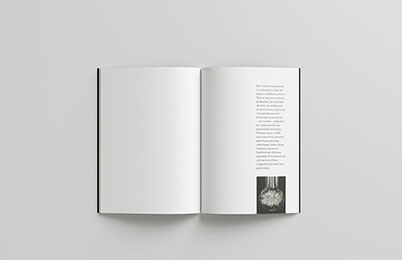
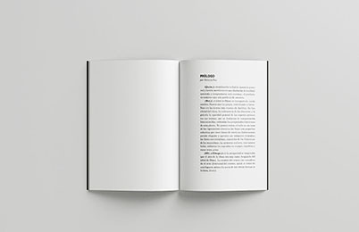
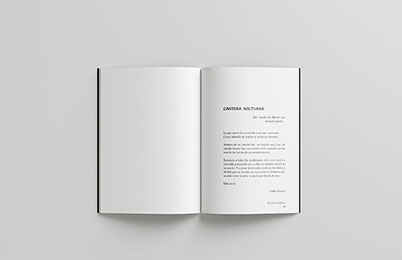
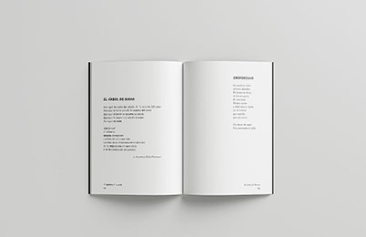
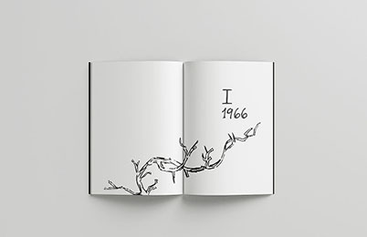
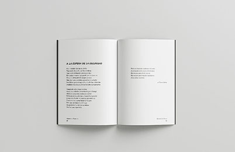
Ilustrado
Libro autopublicación - Diccionario ilustrado «Registro de sensaciones»
Este es un proyecto editorial que reúne una serie de pliegos con palabras desprovistas de significado tradicional, donde la tipografía, el trazo manual y el pulso visual habitan la inmensidad de las páginas. En otras palabras, este proyecto es una bitácora de lo intangible
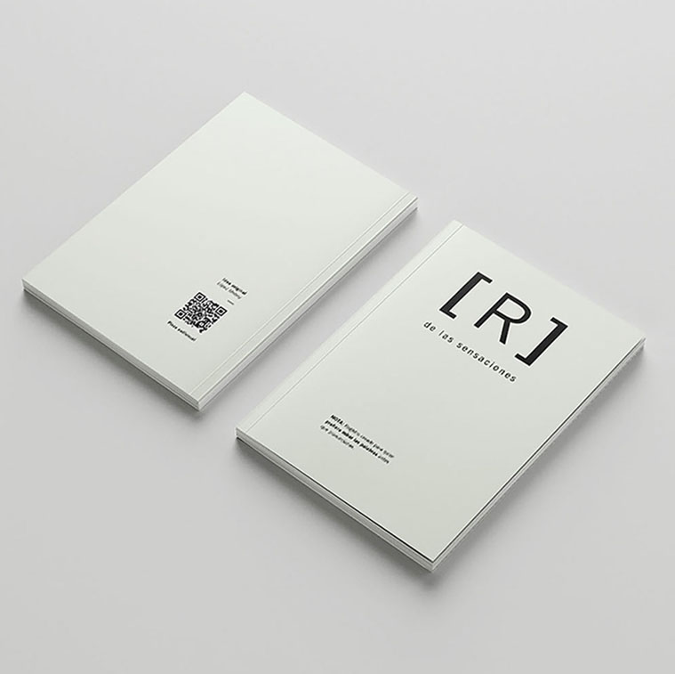


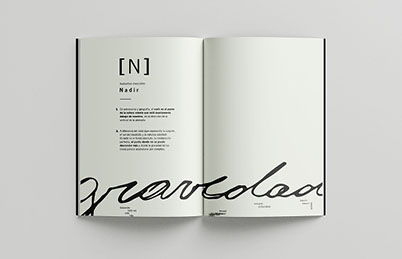
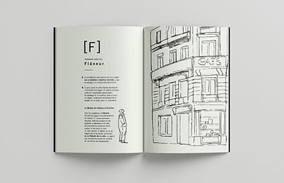
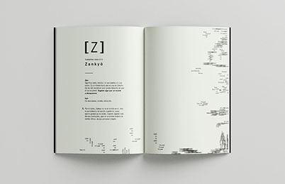


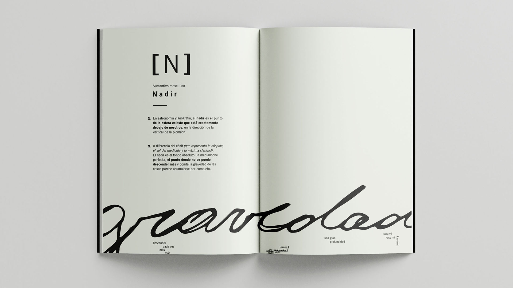
Poemario
Colección de libros - Rediseño de tapas e interior «Poemario Alejandra Pizarnik»
Diseño de sistema editorial de tapas e interior para una colección de libros, basada en tres obras de Alejandra Pizarnik «El árbol de Diana», «Extracción de la piedra de la locura», y «Los trabajos de la noche» esta imperfección tecnica no es un descuido, responde a una busqueda expresiva que trasmite, con honestidad brutal, la tensión, el dolor y su carga emocional
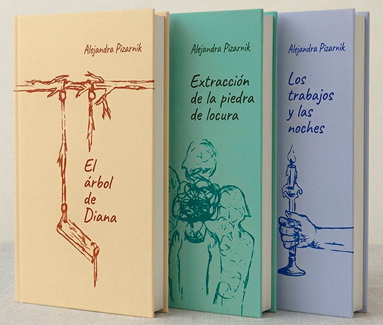






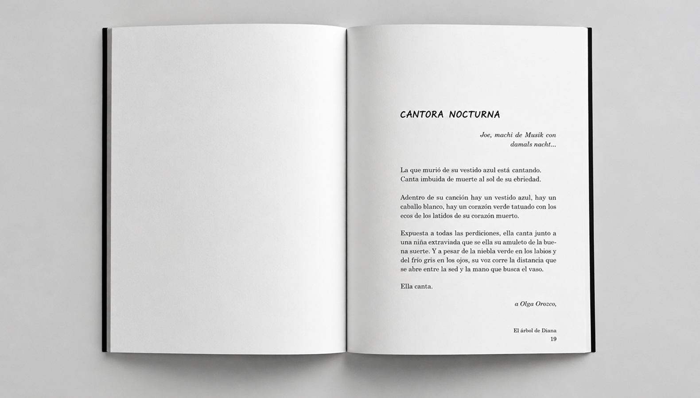
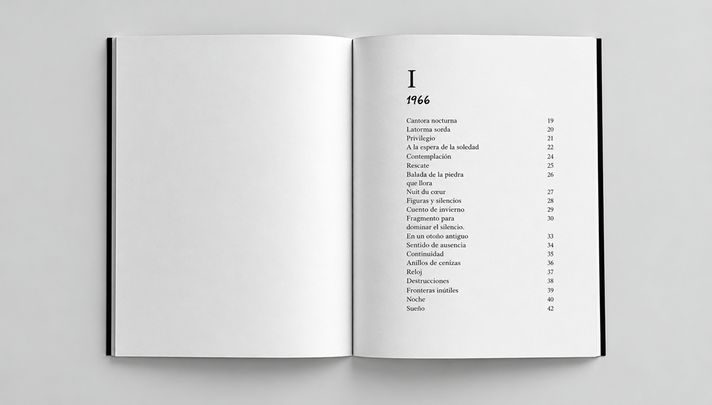
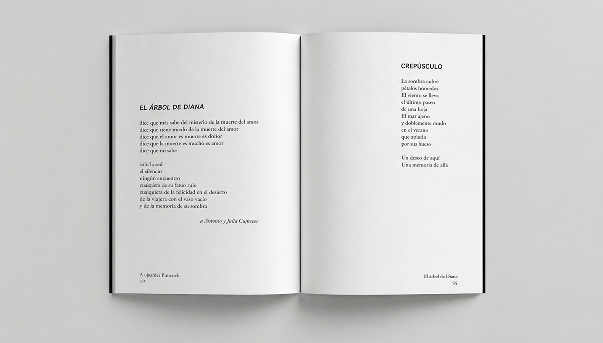
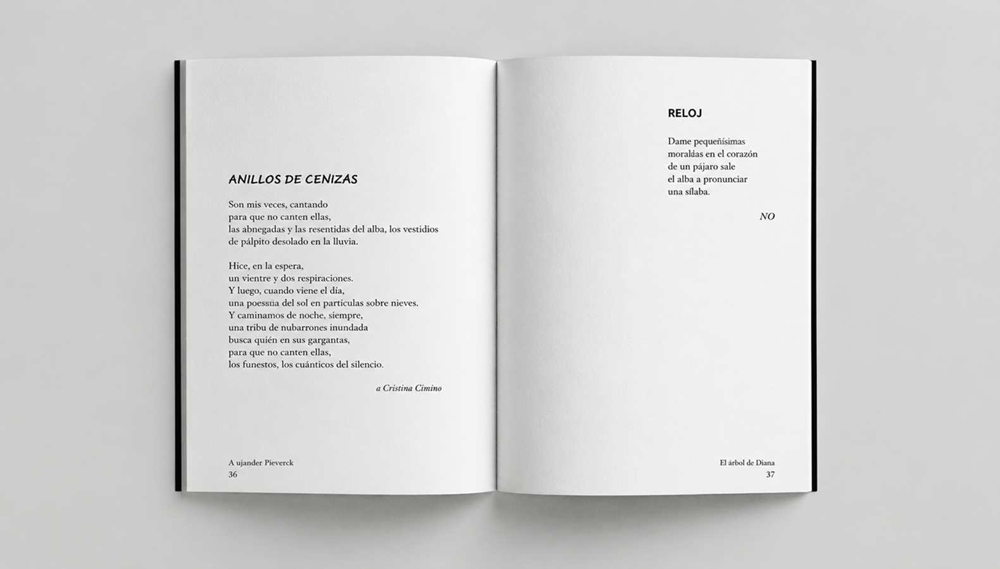
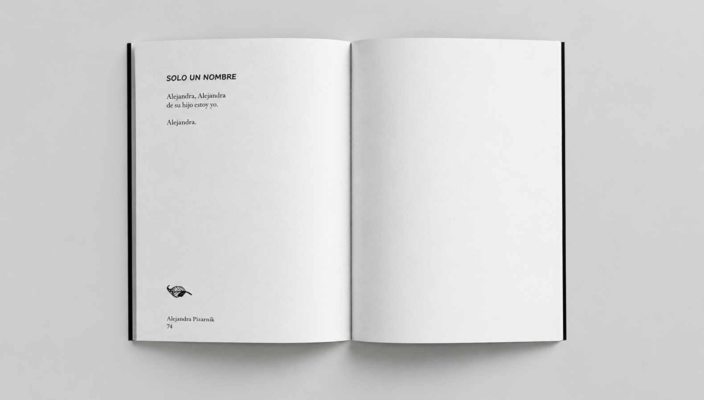